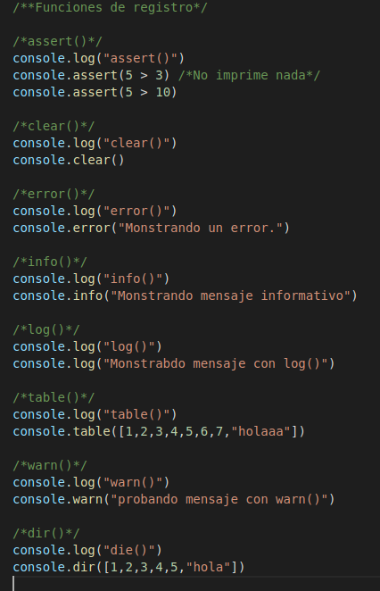
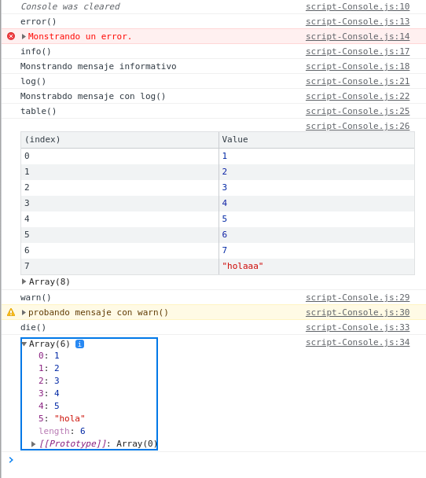
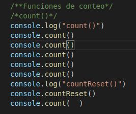
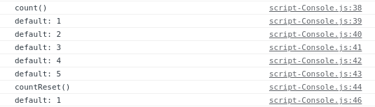
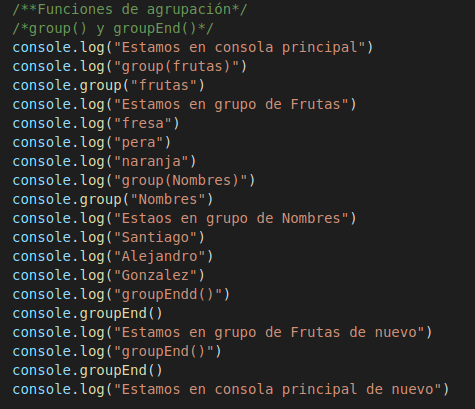
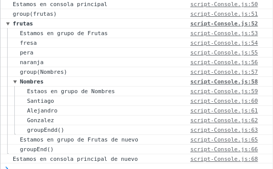
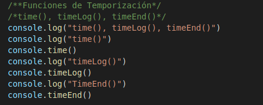
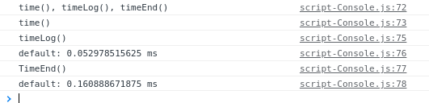

Lección 12 - Console
Definición: Existen diversos metodos para llevar a cabo funcionalidades en la consola de javascript
Metodos:
Funciones de registro
- aasert() Aparece un mensaje de error en la consola si la afirmación es falsa. Si la afirmación es verdadera, no aparecera nada
- clear() Limpia la consola.
- error() Muestra un mensaje de error en la consola web
- info() Emite un mensaje informativo a la consola web. En firefox y chrome, se muestra un pequeño icono "i" junto a estos elementos en el registro de la consola web.
- log() Muestra un mensaje en la consola web (o interprete de javascrit)
- table() Esta función toma un argumento obligatorio: data, que debe ser un array o un objeto, y un parametro adicional: columns y nos muestra una tabla en consola.
- warn() Imprime un mensaje de advertencia en la consola web()
- dir() Despliega una lista interactiva de las propiedades del objeto Javascript especificado.


Funciones de conteo
- count() Registra el numero de veces que se llama a count() - Esta función toma como argumento opcional una etiqueta.
- countReset() Resetea el contador.count()


Funciones de agrupación
- group() Crear un nuevo grupo en linea en el registro de la consola web. Es como si creara una subconsola dentro dela consola.
- grupEnd() Remueve un grupo en linea en el registro de la consola web.


Funciones de temporización
- time() Inicia un temporizador.
- timeLog() Resgistra el valor actual del temporizador.
- timeEnd() Detiene el temporizador.

